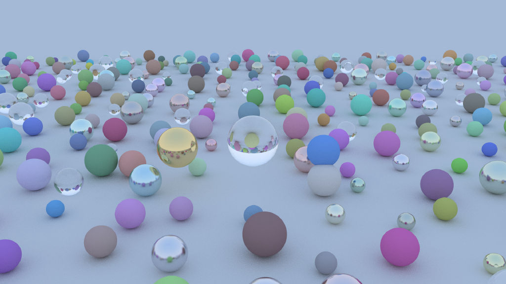

Summary
I'm Yves. I build things to find out how they work.
My projects span systems programming, computer graphics, embedded audio, robotics, and machine learning.
Currently
I like lifting, biking, snowboarding, getting food with friends, and just walking around the city.
Projects
-
Siren Detector: A real-time siren and horn detector. Two microphones estimate where a sound is coming from, and a spectrogram-based neural network runs inference on a Raspberry Pi.
-
SEA GC: A garbage collector built from scratch in C, with page-based allocation and exact root tracing.
roots → A → B C DA and B are reachable. C and D can be collected. -
Path Tracer: A multithreaded renderer in C. Rays bounce through diffuse, glass, and reflective materials, with BVH acceleration to cut down intersection work.

-
RRR Scouting: A live scouting platform for a robotics team. Scouts log match observations that the team can analyze and export during competition.
-
YADQN: A Deep Q-Network written from scratch in NumPy, with a replay buffer, target network, and training loop.
-
SSHBS: A small, fast command-line tool in C for managing SSH hosts and connecting to them.